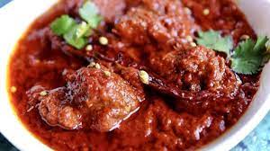
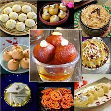
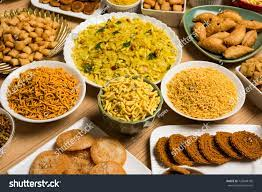
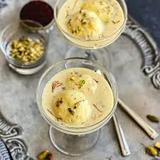
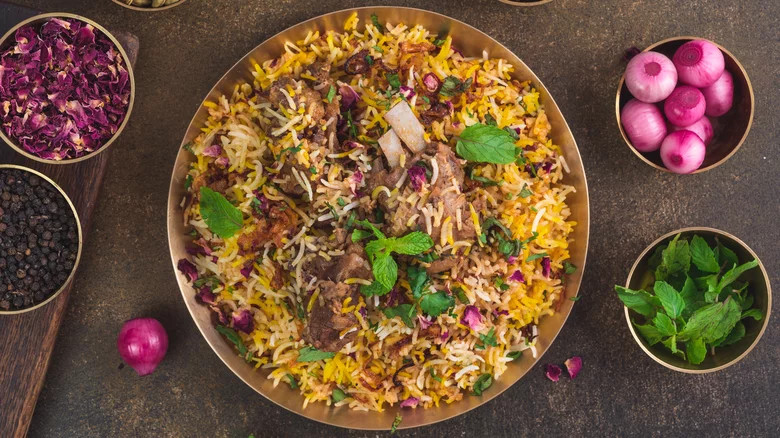
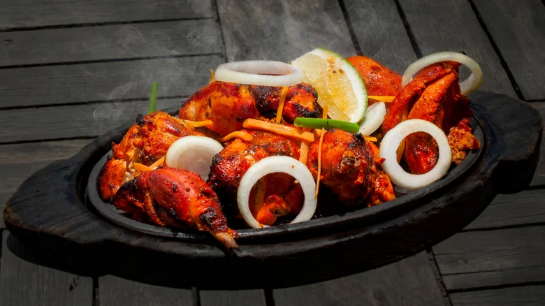
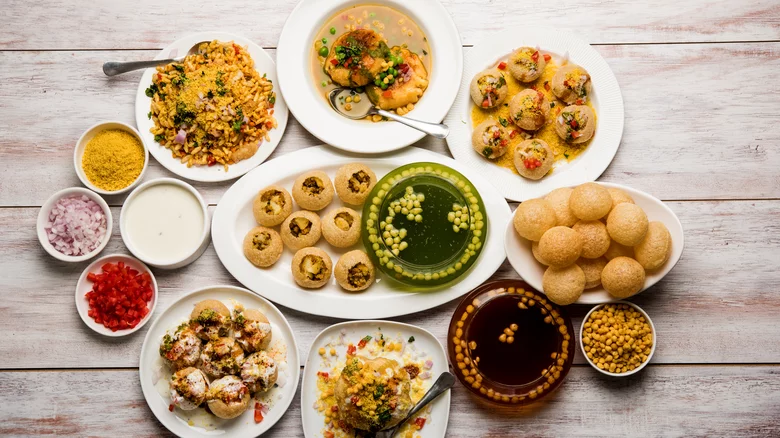

FOOD PARADISE
1.Spicy
2.Sweet
3.Salty
4.Juice
5.Dessert
6.Bread
7.Meals
8.Briyani
9.Tandoorichicken
10.Chaatmasala
1.Spicy

Indian cuisine is a balance of flavors, and almost all savory Indian food is spicy as it is cooked with at least one spice The hot spicy effect often comes from chiles, but many dishes also contain no chili or other type of pepper.
2.Sweet

The term dessert can apply to many sweets, such as biscuits, cakes, cookies, custards, gelatins, ice creams, pastries, pies, puddings, macaroons, sweet soups, tarts, and fruit salad. Fruit is also commonly found in dessert courses, because of its naturally occurring sweetness. Some cultures sweeten foods that are more commonly savory to create desserts.
3.Salty

Salt is naturally found in all foods and does not need to be added. However, many foods that do not taste salty may still be high in sodium. Large amounts of sodium can be hidden in canned, processed, and convenience foods, and many foods that are served at fast food restaurant
4.Juice
 Their quality is impeccable and they have sixteen different variants of fruit juices to choose from – the exotic Indian Mango, Mosambi, Guava, Plum & Litchi to international favourites like Pomegranate, Tomato, Cranberry, Peach, Blackcurrant, Apricot & Grape and the basic Orange, Pineapple, Apple & Mixed Fruit
Their quality is impeccable and they have sixteen different variants of fruit juices to choose from – the exotic Indian Mango, Mosambi, Guava, Plum & Litchi to international favourites like Pomegranate, Tomato, Cranberry, Peach, Blackcurrant, Apricot & Grape and the basic Orange, Pineapple, Apple & Mixed Fruit
5.Dessert

These quick Indian dessert recipes are perfect for dinner parties, or when festivals fall on a weeknight. Whether it's a traditional Carrot Halwa, Moong Dal Halwa, Besan Ladoo, Kalakand, or Indian-inspired desserts like Kulfi Ice Cream, and Mango Cheesecake, or the incredibly easy Indian dessert with milk, Rasmalai,
6.Bread
 Indian restaurant menus, but roti is a staple in Indian homes. Roti is a no-fuss Indian bread, typically made with whole wheat flour that’s kneaded into a soft dough, then rolled into thin circles, and cooked on a tava (Indian skillet) on the stovetop.
Indian restaurant menus, but roti is a staple in Indian homes. Roti is a no-fuss Indian bread, typically made with whole wheat flour that’s kneaded into a soft dough, then rolled into thin circles, and cooked on a tava (Indian skillet) on the stovetop.
7.Meals
 chicken are cooked in a sauce with a particular spice blend, it is called chicken tikka masala. When paneer comes to the play, it is called paneer tikka masala. The world-famous sauce used in tikka masala is mainly tomato-based, with some richness added by cream or thick yogurt.
chicken are cooked in a sauce with a particular spice blend, it is called chicken tikka masala. When paneer comes to the play, it is called paneer tikka masala. The world-famous sauce used in tikka masala is mainly tomato-based, with some richness added by cream or thick yogurt.
8.Briyani

delightfully fragrant rice dish that will stimulate all of your senses, biryani is the way to go. As yet another nod to India's mixed history, BBC reports that the dish comes from Iran — birinj biriyan translates to fried rice in Persian.
9.Tandoorichicken

Bright red tandoori chicken is easy to recognize and harder to forget once you taste the delicious preparation. The flavor comes from both the yogurt and spice marinade, as well as from the cooking method. Chicken (usually on the bone) is cooked in a tandoor oven made from clay, which imparts smoky aromas and infuses the meat with flavor.
10.Chaatmasala

Chaat means to lick or taste, a hint that you'll probably want to lick your fingers to get the most out of this snack. Some form of fried dough is a typical component, enhanced with spicy, sour, sweet, and salty toppings.